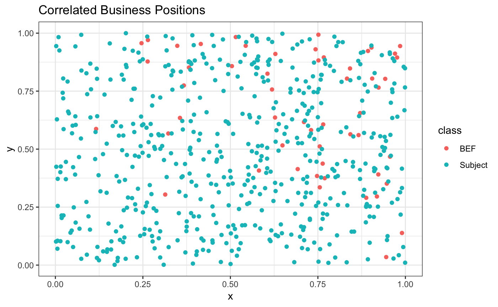
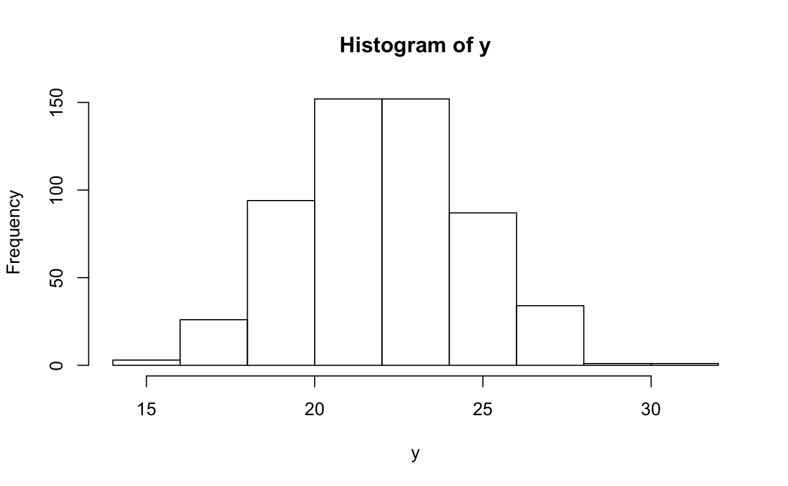
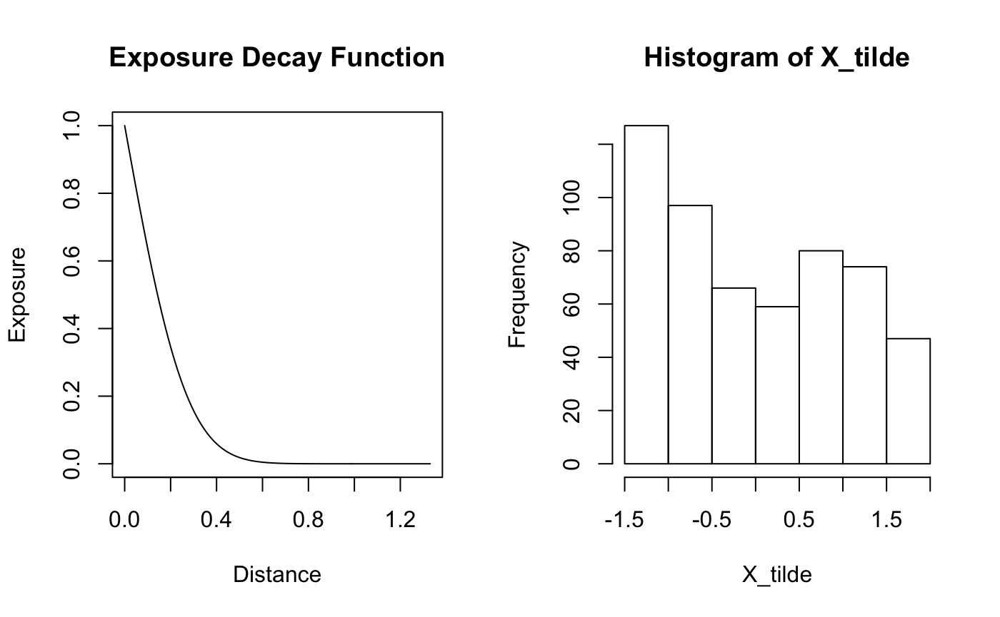
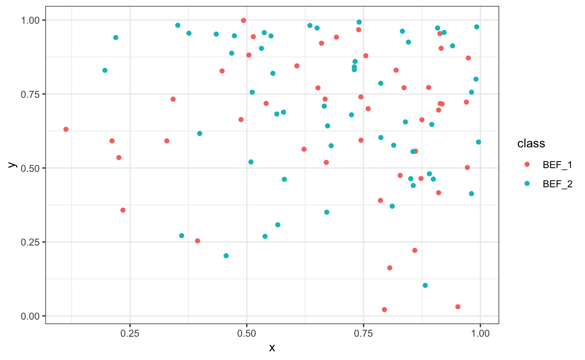
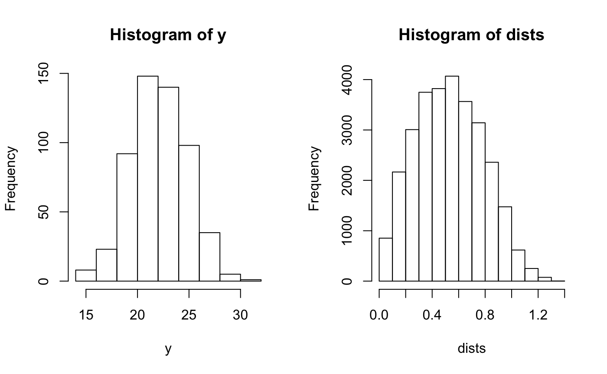
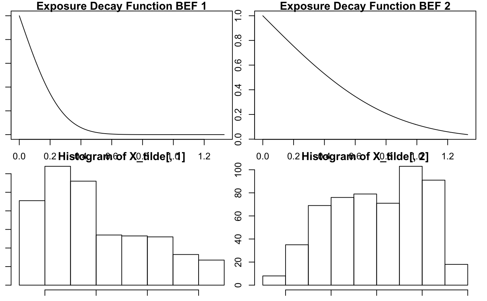
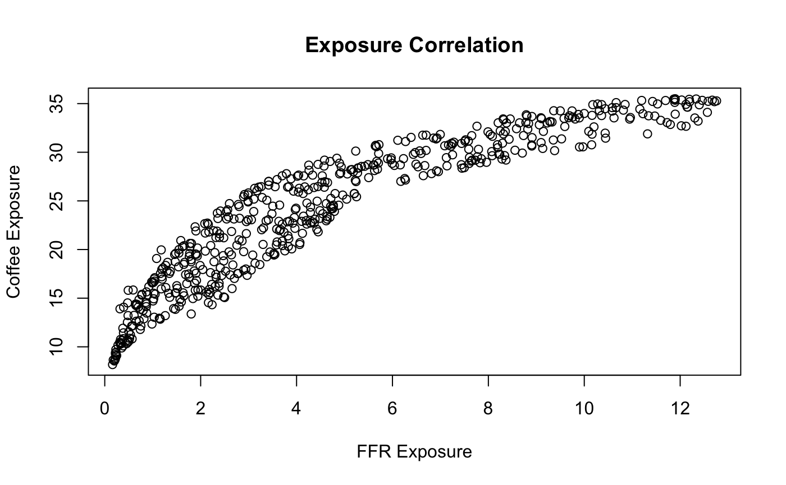
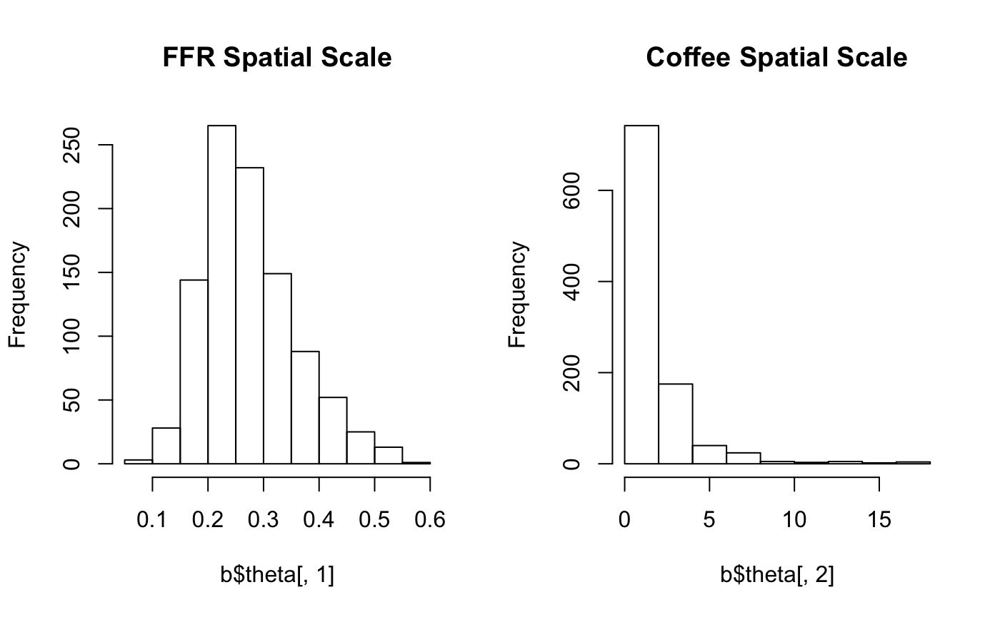
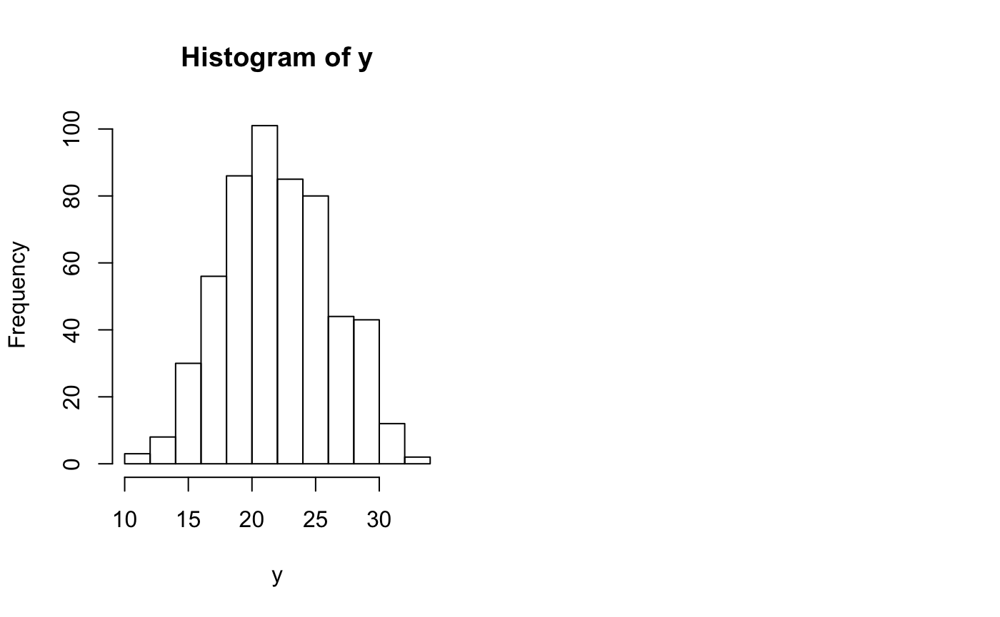

STAP_Spatial_Correlation.RmdTo induce correlation between business locations, we generate the x and y coordinates from an inhomogenous poisson process, with intensity function \(f(x,y) = 200xy\). We continue to generate subjects uniformly across the space.
set.seed(2524)
num_subj <- 550
intenfun <- function(x,y) 200 * x *y
bef_rpp <- spatstat::rpoispp(intenfun, lmax = 5E3)
bef_df <- data_frame(x = bef_rpp$x,
y = bef_rpp$y, class = 'BEF')
sub_df <- data_frame(x = runif(n = num_subj, min = 0, max = 1.0),
y = runif(n = num_subj, min = 0, max = 1.0),
class = "Subject")
rbind(bef_df,sub_df) %>% ggplot(aes(x=x,y=y,color=class)) + geom_point() +
theme_bw() + ggtitle("Correlated Business Positions")
Then suppose the form of some measurement on the subjects is:
\[ E[Y_i] = \alpha + Z_i \delta + X_i(\theta)\beta_2\\ X_i(\theta) = \sum_{d \in \mathcal{D}_i} \text{erfc}(\frac{d}{\theta}) \] Here we use the following
alpha <- 22.5
Z <- rbinom(n = num_subj, prob = .45, size = 1)
delta <- -.8
theta <- .3
beta <- 1.2
sigma <- 2.3supposing we use all the data available (no exclusion distance), then this results in the following dataset
dists <- fields::rdist(as.matrix(sub_df[,1:2]),
as.matrix(bef_df[,1:2]))
X <- apply(dists,1,function(x) sum(pracma::erfc(x/theta)))
X_tilde <- (X-mean(X))/sd(X) ## center and scale the exposure effect
y <- alpha + Z*delta + X_tilde*beta + rnorm(n = num_subj, mean = 0, sd = sigma)
hist(y)
d <- seq(from = 0, to = max(dists), by = 0.01)
X_theta_one <- pracma::erfc(d/theta)
par(mfrow = c(1,2))
plot(d,X_theta_one,type='l',main = "Exposure Decay Function", xlab = "Distance",
ylab = "Exposure")
hist(X_tilde)
Then we model this with rstap in the following manner
distance_data <- dists %>% as_data_frame() %>%
mutate(subj_id = 1:num_subj) %>%
gather(contains("V"), key = 'BEF',value = 'Distance') %>%
mutate(BEF = 'Fast_Food')
subject_data <- data_frame(subj_id = 1:num_subj,
y = y,
sex = factor(Z,labels=c("M","F")))
fit <- stap_glm(formula = y ~ sex + stap(Fast_Food),
subject_data = subject_data,
distance_data = distance_data,
family = gaussian(link = 'identity'),
id_key = 'subj_id',
prior_intercept = normal(location = 25, scale = 5, autoscale = F),
prior_stap = normal(location = 0, scale = 3, autoscale = F),
prior_theta = log_normal(location = 0, scale = 1),
prior_aux = cauchy(location = 0,scale = 5),
max_distance = max(dists), chains = 1) ## include all data
#>
#> SAMPLING FOR MODEL 'continuous' NOW (CHAIN 1).
#>
#> Gradient evaluation took 0.008116 seconds
#> 1000 transitions using 10 leapfrog steps per transition would take 81.16 seconds.
#> Adjust your expectations accordingly!
#>
#>
#> Iteration: 1 / 2000 [ 0%] (Warmup)
#> Iteration: 200 / 2000 [ 10%] (Warmup)
#> Iteration: 400 / 2000 [ 20%] (Warmup)
#> Iteration: 600 / 2000 [ 30%] (Warmup)
#> Iteration: 800 / 2000 [ 40%] (Warmup)
#> Iteration: 1000 / 2000 [ 50%] (Warmup)
#> Iteration: 1001 / 2000 [ 50%] (Sampling)
#> Iteration: 1200 / 2000 [ 60%] (Sampling)
#> Iteration: 1400 / 2000 [ 70%] (Sampling)
#> Iteration: 1600 / 2000 [ 80%] (Sampling)
#> Iteration: 1800 / 2000 [ 90%] (Sampling)
#> Iteration: 2000 / 2000 [100%] (Sampling)
#>
#> Elapsed Time: 38.9271 seconds (Warm-up)
#> 34.4651 seconds (Sampling)
#> 73.3922 seconds (Total)results <- rbind(c(alpha,delta,beta,theta),coef(fit))
rownames(results) <- c("True","Estimated")
results
#> (Intercept) sexF Fast_Food Fast_Food_spatial_scale
#> True 22.5000 -0.8000000 1.20000 0.3000000
#> Estimated 22.4277 -0.8853724 1.20657 0.4295096se(fit)
#> (Intercept) sexF Fast_Food
#> 0.12820110 0.18597310 0.09752372
#> Fast_Food_spatial_scale
#> 0.09280066set.seed(2524)
intenfun <- function(x,y) 250 * x * y
bef_rpp <- spatstat::rpoispp(intenfun, lmax = 500)
bef_df <- data_frame(x = bef_rpp$x,
y = bef_rpp$y, class = 'BEF_1')
intenfun <- function(x,y) 250 * x * y
bef_rpp <- spatstat::rpoispp(intenfun, lmax = 500)
bef_df <- rbind(bef_df,data_frame(x = bef_rpp$x,
y = bef_rpp$y, class = 'BEF_2'))
rbind(bef_df) %>% ggplot(aes(x=x,y=y,color=class)) +
geom_point() + theme_bw() Then suppose the form of some measurement on the subjects is:
\[ E[Y_i] = \alpha + Z_i \delta + X_{i,1}(\theta_1)\beta_2 + X_{i,2}(\theta_2)\beta_3 \\ X_{i,j}(\theta) = \sum_{d \in \mathcal{D}_i} \text{erfc}(\frac{d}{\theta_j}) \quad j = 1,2 \] Here we use the following
alpha <- 22.5
Z <- rbinom(n = num_subj, prob = .45, size = 1)
delta <- -.8
theta <- .3
theta_2 <- .9
beta <- c(1.2,.5)
sigma <- 2.3supposing we (again) use all the data available (no exclusion distance), then this results in the following dataset
dists_1 <- fields::rdist(as.matrix(sub_df[,1:2]),
as.matrix(bef_df[bef_df$class=='BEF_1',1:2]))
X_1 <- apply(dists_1,1,function(x) sum(pracma::erfc(x/theta)))
X_tilde <- (X_1-mean(X_1))/sd(X_1) ## center and scale the exposure effect
dists_2 <- fields::rdist(as.matrix(sub_df[,1:2]),
as.matrix(bef_df[bef_df$class=='BEF_2',1:2]))
X_2 <- apply(dists_2,1,function(x) sum(pracma::erfc(x/theta_2)))
X_tilde <- cbind(X_tilde,(X_2-mean(X_2))/sd(X_2))
y <- alpha + Z*delta + X_tilde %*% beta + rnorm(n = num_subj, mean = 0, sd = sigma)
par(mfrow=c(1,2))
hist(y)
hist(dists)
d <- seq(from = 0, to = max(dists), by = 0.01)
X_theta_one <- pracma::erfc(d/theta)
X_theta_two <- pracma::erfc(d/theta_2)
par(mfrow = c(2,2),mar=rep(1,4))
plot(d,X_theta_one,type='l',main = "Exposure Decay Function BEF 1", xlab = "Distance", ylab = "Exposure")
plot(d,X_theta_two,type='l', main = "Exposure Decay Function BEF 2")
hist(X_tilde[,1])
hist(X_tilde[,2])
Since the businesses, let’s say Fast Food Restaurants and Coffee shops, were generated using the same intensity function from an inhomogenous poisson model, we should expect the exposure to be correlated, since these businesses tend to be located in the same area - as indeed, they may be in real life as well.
cor(X_tilde[,1],X_tilde[,2])
#> [1] 0.9193313plot(X_1,X_2, xlab = "FFR Exposure", ylab = "Coffee Exposure",
main = "Exposure Correlation")
This may cause problems in our modeling, but we should check to make sure.
Then we model this with rstap in the following manner
distance_data <- dists_1 %>% as_data_frame() %>%
mutate(subj_id = 1:num_subj) %>%
gather(contains("V"), key = 'BEF',value = 'Distance') %>%
mutate(BEF = 'Fast_Food') %>%
rbind(dists_2 %>% as_data_frame() %>%
mutate(subj_id = 1:num_subj) %>%
gather(contains("V"), key ='BEF', value = 'Distance') %>%
mutate(BEF = 'Coffee_Shops'))
subject_data <- data_frame(subj_id = 1:num_subj,
y = as.vector(y),
sex = factor(Z,labels=c("M","F")))
fit <- stap_glm(formula = y ~ sex + stap(Fast_Food) + stap(Coffee_Shops),
subject_data = subject_data,
distance_data = distance_data,
family = gaussian(link = 'identity'),
id_key = 'subj_id',
prior = normal(location = 0, scale = 5,autoscale = F),
prior_intercept = normal(location = 25, scale = 5, autoscale = F),
prior_stap = normal(location = 0, scale = 3, autoscale = F),
prior_theta = log_normal(location = 0, scale = 1),
prior_aux = cauchy(location = 0,scale = 5),
max_distance = max(dists), chains = 1) ## include all data
#>
#> SAMPLING FOR MODEL 'continuous' NOW (CHAIN 1).
#>
#> Gradient evaluation took 0.007669 seconds
#> 1000 transitions using 10 leapfrog steps per transition would take 76.69 seconds.
#> Adjust your expectations accordingly!
#>
#>
#> Iteration: 1 / 2000 [ 0%] (Warmup)
#> Iteration: 200 / 2000 [ 10%] (Warmup)
#> Iteration: 400 / 2000 [ 20%] (Warmup)
#> Iteration: 600 / 2000 [ 30%] (Warmup)
#> Iteration: 800 / 2000 [ 40%] (Warmup)
#> Iteration: 1000 / 2000 [ 50%] (Warmup)
#> Iteration: 1001 / 2000 [ 50%] (Sampling)
#> Iteration: 1200 / 2000 [ 60%] (Sampling)
#> Iteration: 1400 / 2000 [ 70%] (Sampling)
#> Iteration: 1600 / 2000 [ 80%] (Sampling)
#> Iteration: 1800 / 2000 [ 90%] (Sampling)
#> Iteration: 2000 / 2000 [100%] (Sampling)
#>
#> Elapsed Time: 200.456 seconds (Warm-up)
#> 152.957 seconds (Sampling)
#> 353.413 seconds (Total)results <- rbind(c(alpha,delta,beta,theta,theta_2),coef(fit))
rownames(results) <- c("True","Estimated")
results
#> (Intercept) sexF Fast_Food Coffee_Shops
#> True 22.50000 -0.8000000 1.200000 0.5000000
#> Estimated 22.47067 -0.8193664 1.152086 0.4015794
#> Fast_Food_spatial_scale Coffee_Shops_spatial_scale
#> True 0.3000000 0.900000
#> Estimated 0.2598541 1.213853fit$ses
#> (Intercept) sexF
#> 0.12643135 0.20377254
#> Fast_Food Coffee_Shops
#> 0.33620101 0.35404959
#> Fast_Food_spatial_scale Coffee_Shops_spatial_scale
#> 0.07659055 0.86640681colnames(X_tilde) <- c("Fast_Food","Coffee_Shops")
fit_lm <- lm(y ~ sex + Fast_Food + Coffee_Shops,data=cbind(subject_data,X_tilde))
summary(fit_lm)
#>
#> Call:
#> lm(formula = y ~ sex + Fast_Food + Coffee_Shops, data = cbind(subject_data,
#> X_tilde))
#>
#> Residuals:
#> Min 1Q Median 3Q Max
#> -7.1064 -1.4780 0.0948 1.4595 6.2257
#>
#> Coefficients:
#> Estimate Std. Error t value Pr(>|t|)
#> (Intercept) 22.4730 0.1283 175.104 < 2e-16 ***
#> sexF -0.8391 0.1923 -4.363 1.53e-05 ***
#> Fast_Food 1.2253 0.2431 5.040 6.34e-07 ***
#> Coffee_Shops 0.2979 0.2431 1.225 0.221
#> ---
#> Signif. codes: 0 '***' 0.001 '**' 0.01 '*' 0.05 '.' 0.1 ' ' 1
#>
#> Residual standard error: 2.241 on 546 degrees of freedom
#> Multiple R-squared: 0.3285, Adjusted R-squared: 0.3248
#> F-statistic: 89.05 on 3 and 546 DF, p-value: < 2.2e-16cors <- sapply(1:nrow(fit$x_tilde), function(x) cor(fit$x_tilde[x,,1],fit$x_tilde[x,,2], method='spearman'))
summary(cors)
#> Min. 1st Qu. Median Mean 3rd Qu. Max.
#> 0.3122 0.4593 0.4870 0.4823 0.5136 0.5486b <- rstan::extract(fit$stapfit)
par(mfrow=c(1,2))
hist(b$theta[,1],main="FFR Spatial Scale")
hist(b$theta[,2],main="Coffee Spatial Scale")
If the effect of coffee shops becomes stronger…
alpha <- 22.5
Z <- rbinom(n = num_subj, prob = .45, size = 1)
delta <- -.8
theta <- .3
theta_2 <- .9
beta <- c(1.2,2.5)
sigma <- 2.3supposing we use all the data available (no exclusion distance), then this results in the following dataset
dists_1 <- fields::rdist(as.matrix(sub_df[,1:2]),
as.matrix(bef_df[bef_df$class=='BEF_1',1:2]))
X_1 <- apply(dists_1,1,function(x) sum(pracma::erfc(x/theta)))
X_tilde <- (X_1-mean(X_1))/sd(X_1) ## center and scale the exposure effect
dists_2 <- fields::rdist(as.matrix(sub_df[,1:2]),
as.matrix(bef_df[bef_df$class=='BEF_2',1:2]))
X_2 <- apply(dists_2,1,function(x) sum(pracma::erfc(x/theta_2)))
X_tilde <- cbind(X_tilde,(X_2-mean(X_2))/sd(X_2))
y <- alpha + Z*delta + X_tilde %*% beta + rnorm(n = num_subj, mean = 0, sd = sigma)
par(mfrow=c(1,2))
hist(y)
distance_data <- dists_1 %>% as_data_frame() %>%
mutate(subj_id = 1:num_subj) %>%
gather(contains("V"), key = 'BEF',value = 'Distance') %>%
mutate(BEF = 'Fast_Food') %>%
rbind(dists_2 %>% as_data_frame() %>%
mutate(subj_id = 1:num_subj) %>%
gather(contains("V"), key ='BEF', value = 'Distance') %>%
mutate(BEF = 'Coffee_Shops'))
subject_data <- data_frame(subj_id = 1:num_subj,
y = as.vector(y),
sex = factor(Z,labels=c("M","F")))
fit_CF <- stap_glm(formula = y ~ sex + stap(Fast_Food) + stap(Coffee_Shops),
subject_data = subject_data,
distance_data = distance_data,
family = gaussian(link = 'identity'),
id_key = 'subj_id',
prior = normal(location = 0, scale = 5,autoscale = F),
prior_intercept = normal(location = 25, scale = 5, autoscale = F),
prior_stap = normal(location = 0, scale = 3, autoscale = F),
prior_theta = log_normal(location = 0, scale = 1),
prior_aux = cauchy(location = 0,scale = 5),
max_distance = max(dists), chains = 1) ## include all data
#>
#> SAMPLING FOR MODEL 'continuous' NOW (CHAIN 1).
#>
#> Gradient evaluation took 0.004644 seconds
#> 1000 transitions using 10 leapfrog steps per transition would take 46.44 seconds.
#> Adjust your expectations accordingly!
#>
#>
#> Iteration: 1 / 2000 [ 0%] (Warmup)
#> Iteration: 200 / 2000 [ 10%] (Warmup)
#> Iteration: 400 / 2000 [ 20%] (Warmup)
#> Iteration: 600 / 2000 [ 30%] (Warmup)
#> Iteration: 800 / 2000 [ 40%] (Warmup)
#> Iteration: 1000 / 2000 [ 50%] (Warmup)
#> Iteration: 1001 / 2000 [ 50%] (Sampling)
#> Iteration: 1200 / 2000 [ 60%] (Sampling)
#> Iteration: 1400 / 2000 [ 70%] (Sampling)
#> Iteration: 1600 / 2000 [ 80%] (Sampling)
#> Iteration: 1800 / 2000 [ 90%] (Sampling)
#> Iteration: 2000 / 2000 [100%] (Sampling)
#>
#> Elapsed Time: 301.978 seconds (Warm-up)
#> 291.927 seconds (Sampling)
#> 593.905 seconds (Total)results_CF <- rbind(c(alpha,delta,beta,theta,theta_2),coef(fit_CF))
rownames(results_CF) <- c("True","Estimated")
results_CF
#> (Intercept) sexF Fast_Food Coffee_Shops
#> True 22.50000 -0.8000000 1.200000 2.500000
#> Estimated 22.38903 -0.7991213 1.782837 1.752011
#> Fast_Food_spatial_scale Coffee_Shops_spatial_scale
#> True 0.3000000 0.9000000
#> Estimated 0.3354129 0.9332912